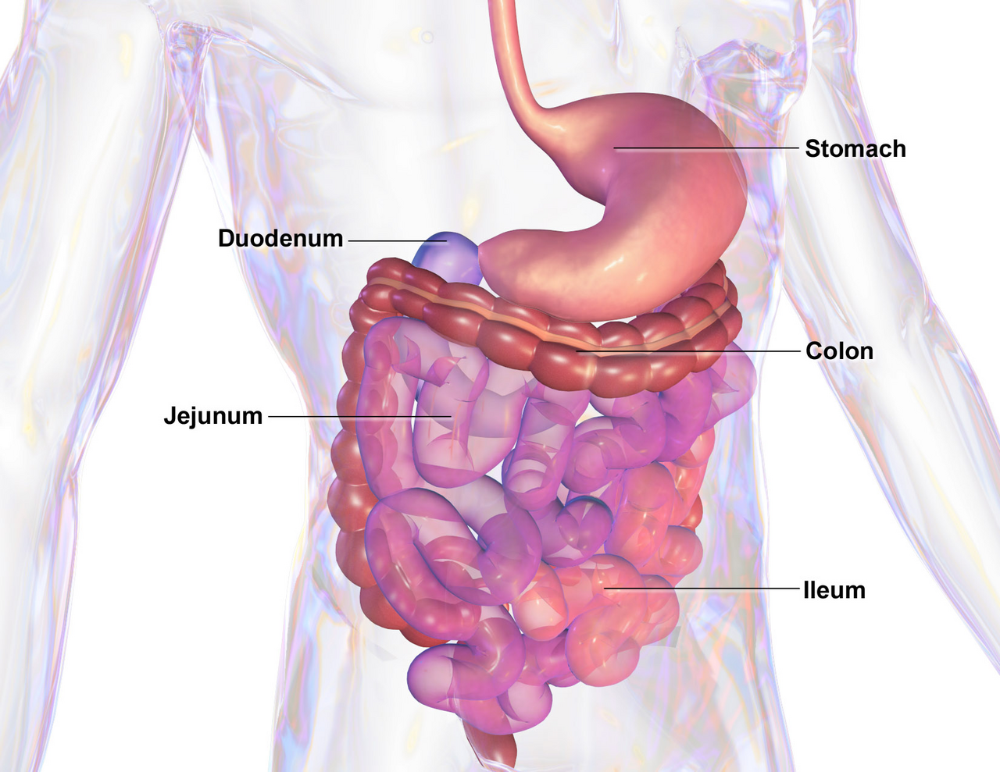
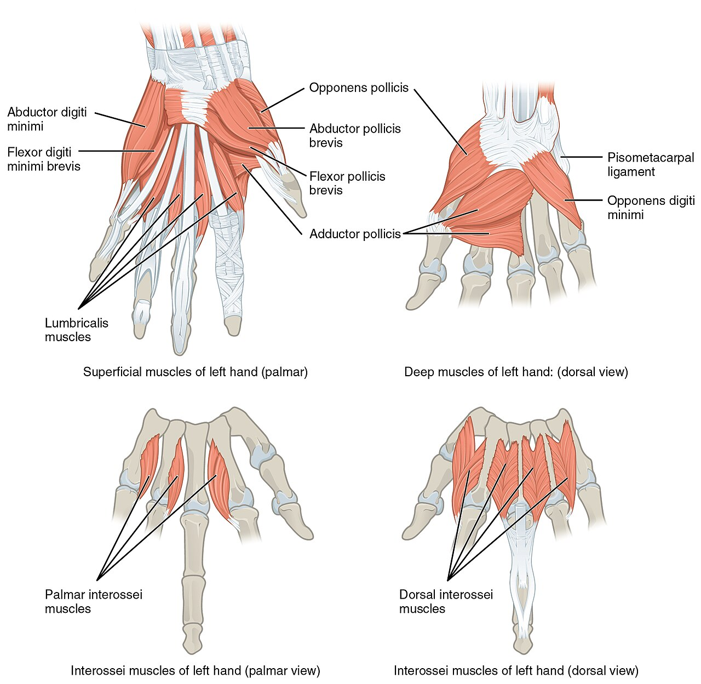
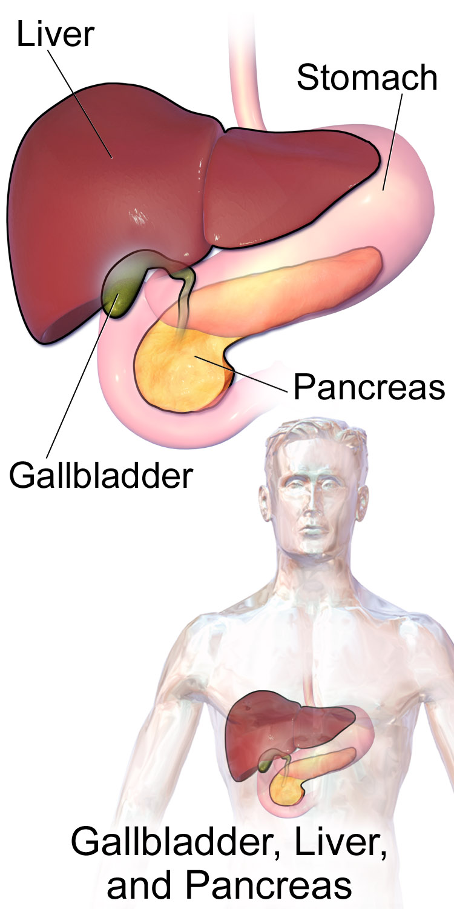
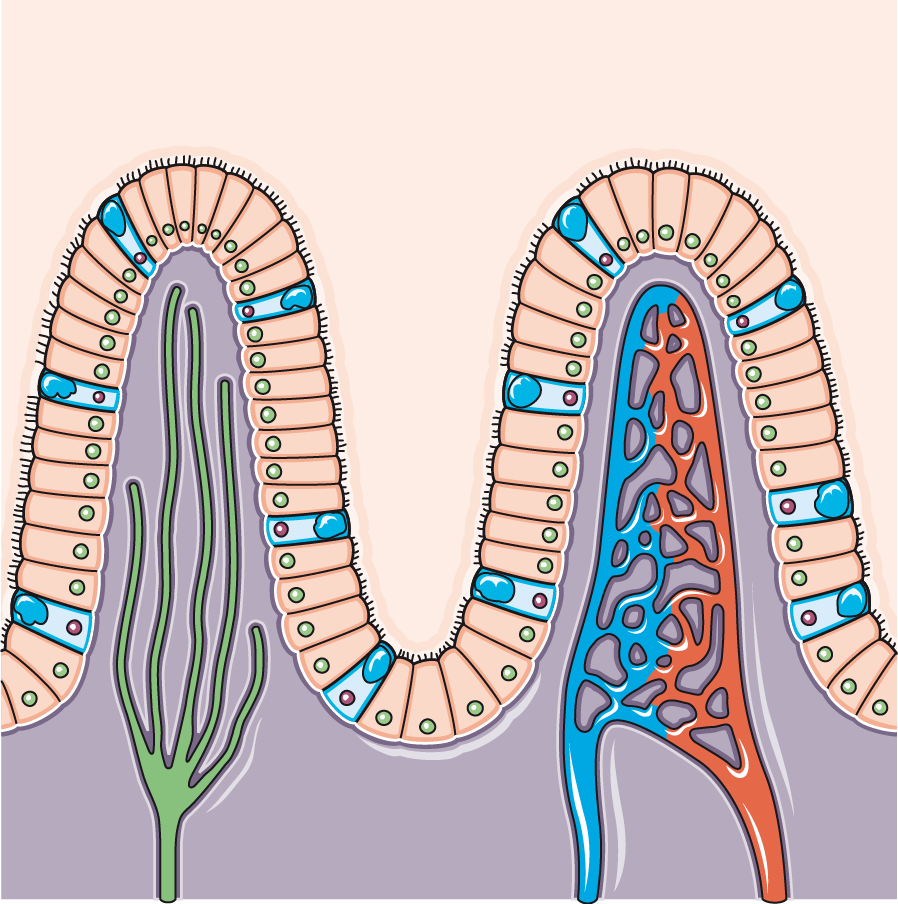
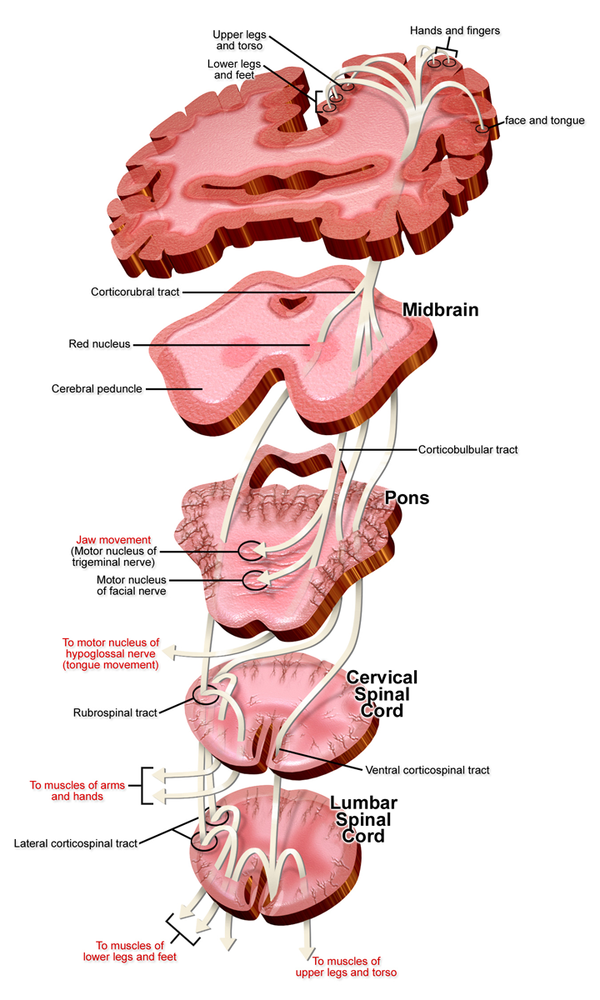

The Digestive System
The digestive tract is a nine-meter chemical reactor. It has a conveyor belt built into its own walls. Almost everything it does is a transport problem. Food has to move at a controlled rate. It has to be hydrolyzed, or split apart by water, into pieces small enough to cross a membrane. Then it has to be pulled across a sheet of cells called the epithelium. The cells build electrical and chemical gradients, and the food rides them. Movement follows the same flow rule as blood: Q = ΔP / R. The pressure difference comes from smooth muscle squeezing. The resistance comes from sphincters and from thick gut contents. Secretion runs on ion pumps that build very steep gradients. The parietal cell of the stomach concentrates hydrogen ions roughly three million-fold. Absorption runs mostly on sodium gradients. The Na+/K+-ATPase on the far side of the cell keeps those gradients up. Water never moves on its own. It follows solute by osmosis. Over all of this sits a web of negative feedback. pH sensors, fat sensors and stretch sensors match how fast food arrives to how fast it can be handled.
By the end of this module you can
- Say how slow waves from the interstitial cells of Cajal set the top speed of contraction in each part of the gut. Say how spike potentials turn that rhythm into force.
- Tell peristalsis, segmentation and the migrating motor complex apart. Compare how each works, when it runs and what it is for. Link the movement of a bolus to Q = ΔP / R.
- Draw the parietal cell H+/K+-ATPase. Name the three acid triggers: acetylcholine, gastrin and histamine. Describe the somatostatin pH feedback loop that shuts acid off.
- Describe receptive relaxation. Describe the duodenal brake on gastric emptying. Give the normal rate of calorie delivery.
- Explain how secretin and cholecystokinin match pancreatic bicarbonate and enzymes to what is in the duodenum. Name the sensor, integrator and effector.
- Explain how a micelle forms. Explain the enterohepatic circulation of bile acids. Say why fat absorption fails after the terminal ileal segment is removed.
- Predict what happens to a carbohydrate, protein and fat meal at the brush border. Name SGLT1, GLUT2, PepT1 and the chylomicron route.
- Account for the roughly nine liters of fluid the gut handles each day. Explain diarrhea as absorption failing to beat secretion.
- Trace the defecation reflex from rectal stretch to voluntary control of the outer sphincter. Point out where positive feedback truly operates.
Section 1The Tube, Its Muscle, and Its Own Nervous System

Four layers, two muscle jackets, one job
From the esophagus to the anus, the wall of the tube repeats the same four-layer plan. The layers are the mucosa, the submucosa, the muscularis externa and the serosa. The mucosa has three parts of its own: epithelium, lamina propria and muscularis mucosae. Learn this plan as an engineering fix, not as anatomy. The epithelium is one cell thick. Every molecule that is absorbed has to cross it, and distance matters. In Fick’s relationship, flux falls as the barrier gets thicker. Double the thickness and you halve the flux. The lamina propria sits right underneath. It is packed with capillaries and lymphatics that carry absorbed material away. That keeps the concentration gradient across the epithelium steep.
The muscularis externa has two smooth-muscle coats. They lie at right angles to each other. The inner circular layer narrows the lumen when it contracts. The outer longitudinal layer shortens the segment. Neither one alone can move anything useful. Contract the circular layer behind a bolus. Then contract the longitudinal layer ahead of it. Done in order, that makes a traveling pressure wave, with a widened receiving segment already waiting in front. This is propulsion by pressure gradient, not by squeezing alone. Flow through any segment follows the same rule used for blood: Q = ΔP / R. The contraction supplies ΔP. The resistance comes from how thick the gut contents are and, above all, from the tone of the sphincter downstream.
Gut smooth muscle acts as a functional syncytium. That means the cells are joined electrically by gap junctions. Depolarization spreads from cell to cell without a nerve ending on each one. So one motor neuron can influence thousands of muscle cells. Coupling by itself does not create rhythm. Add the built-in pacemaker cells and the built-in nerve networks described below, and the gut keeps contracting rhythmically even when the outside nerves are cut. A transplanted intestine has no connection to the brain at all. It still moves food along.
Slow waves: the pacemaker that never quite fires
The rhythm of the gut is set by the interstitial cells of Cajal (ICC). These are pacemaker cells that lie between the muscle layers. They make steady, repeating swings in voltage called slow waves, or the basic electrical rhythm. The resting membrane potential swings between roughly −60 and −40 mV. Slow waves are not action potentials. On their own they cause little or no contraction. They are permissive. They set the maximum possible frequency of contraction. They also set the timing window in which a contraction may happen.
Force appears only when a slow-wave peak is pushed past threshold, about −40 mV. At that point voltage-gated Ca2+ channels open. True spike potentials then ride on top of the wave. Calcium entry drives contraction through calmodulin and myosin light-chain kinase. That is the smooth-muscle mechanism from Module 5. More spikes per slow wave means a stronger contraction. Excitatory input depolarizes the baseline, so more waves reach threshold. That input is acetylcholine from enteric motor neurons, plus stretch and gastrin. Inhibitory input hyperpolarizes the baseline, so fewer waves reach threshold. That input is norepinephrine, VIP and nitric oxide. The ICC fix the frequency. Nerves and hormones set the strength.
| Region | Slow wave frequency | Dominant pattern | Typical transit |
|---|---|---|---|
| Stomach (body to antrum) | about 3 per minute | Mixing waves, push-back (retropulsion) | Solids: half gone in 2–3 h |
| Duodenum | about 12 per minute | Segmentation | — |
| Ileum | 8–9 per minute | Segmentation, then peristalsis | Small bowel total 3–5 h |
| Colon | 2–8 per minute (irregular) | Pouch squeezing, mass movements | 12–48 h |
Peristalsis, segmentation and the housekeeper wave
Peristalsis is a reflex. It is not a pattern forced on the gut from outside. Stretching the wall switches on intrinsic primary afferent neurons. Serotonin from enterochromaffin cells in the mucosa helps do this. Those afferents drive an ascending pathway. It releases acetylcholine and substance P. That contracts the circular muscle oral to the bolus, meaning on the mouth side. They also drive a descending pathway. It releases nitric oxide and VIP. That relaxes the circular muscle aboral to the bolus, meaning on the far side. Contraction behind and relaxation ahead makes a pressure gradient. The contents move. This one-way behavior is the law of the intestine. It belongs entirely to the enteric circuitry.
Segmentation has a different purpose. Rings of circular muscle sit close together and contract and relax by turns. They chop the chyme and shuttle it back and forth with no net forward movement. The job is mixing. It brings chyme up against enzymes and against the unstirred layer over the brush border. That unstirred layer is where the real absorption bottleneck sits. Segmentation takes over during and after a meal. It runs at the local slow-wave frequency. That is why the duodenum mixes at about 12 cycles per minute and the ileum mixes more slowly. The result is a gentle drift toward the cecum.
Between meals a third pattern appears. Every 90 to 120 minutes of fasting, a band of strong contraction sweeps from the stomach to the end of the ileum. The sweep itself takes about 90 minutes. This is the migrating motor complex. Cyclic surges of the hormone motilin set it off. It pushes leftover residue, indigestible bits and bacteria downstream. It is the “intestinal housekeeper.” Eating shuts it off at once. When it fails, as in some nerve diseases and after certain surgeries, bacteria build up in the small bowel. That causes bloating and poor absorption.
Who is in charge: enteric brain, vagus, hormones
The enteric nervous system holds something like 200–600 million neurons. That is on par with the spinal cord. They sit in two networks called plexuses. The myenteric (Auerbach) plexus lies between the muscle layers and controls motility. The submucosal (Meissner) plexus lies in the submucosa and controls secretion and local blood flow. The system holds sensory neurons, interneurons and motor neurons. So it can run complete reflex arcs with no help from the central nervous system. In Hirschsprung disease, enteric ganglia never form in one stretch of colon. That stretch cannot relax, and stool cannot pass. It is a clean demonstration that the inhibitory enteric neurons, not the brain, allow forward flow.
The autonomic nervous system adjusts the gut rather than commands it. Parasympathetic fibers are mostly excitatory. They raise secretion and motility. The vagus reaches as far as the first two-thirds of the transverse colon. Pelvic nerves cover the rest, down to the anus. Most vagal fibers are afferent. They carry news up rather than orders down. Short vagovagal reflexes such as receptive relaxation depend on that loop. Sympathetic outflow is inhibitory. It slows motility, tightens sphincters and cuts blood flow to the gut. That is why digestion halts under stress or in shock.
| Hormone | Cell and site | Trigger | Main action |
|---|---|---|---|
| Gastrin | G cells, gastric antrum | Peptides, stretch, vagal GRP | Acid secretion, mucosal growth |
| Cholecystokinin (CCK) | I cells, duodenum and jejunum | Fatty acids, amino acids | Pancreatic enzymes, gallbladder squeeze, slower emptying, feeling full |
| Secretin | S cells, duodenum | Gut pH below about 4.5 | Pancreatic and biliary bicarbonate. Blocks acid |
| GIP | K cells, duodenum and jejunum | Glucose, fat | Incretin: boosts insulin release |
| GLP-1 and PYY | L cells, ileum and colon | Nutrients reaching the far end of the bowel | Incretin, slower emptying, feeling full (the “ileal brake”) |
| Motilin | M cells, small intestine | Fasting, cyclic | Starts the migrating motor complex |
| Ghrelin | Stomach fundus | Empty stomach | Hunger signal to the hypothalamus |
Interstitial cells of Cajal set the rhythm. Spike potentials set the force. The enteric nervous system runs complete reflexes on its own. The brain only fine-tunes a machine that already governs itself.
Section 2Mouth to Stomach: Swallowing, Acid and Metered Emptying

Chewing, saliva and the swallow
Mechanical digestion starts with chewing. Its purpose in the body is surface area. Enzymes work at a surface. Smaller pieces mean a faster reaction. The salivary glands put out roughly 1 to 1.5 liters a day. That fluid sits at pH 6.5 to 7.5. Stimulated saliva is watery. The acinar cells secrete faster than the ducts can pull sodium back out. So stimulated saliva is more plentiful and less hypotonic than resting saliva. Saliva carries salivary amylase, which starts breaking starch down. It carries lingual lipase as well. It also carries bicarbonate to buffer acid, mucins for lubrication, lysozyme and IgA. Note the autonomic exception here. Both sympathetic and parasympathetic stimulation raise salivary secretion. The parasympathetic makes a lot of watery saliva. The sympathetic makes a small amount of thick saliva.
Swallowing starts with a voluntary oral phase. Two reflex phases follow, run by the swallowing center in the medulla. The pharyngeal phase takes about one second. The soft palate rises and closes the nasopharynx. The larynx lifts and the epiglottis steers the bolus away from the airway. The vocal folds shut. Breathing stops for a moment, which is called deglutition apnea. The upper esophageal sphincter then relaxes. In the esophageal phase a primary peristaltic wave travels at 3 to 5 cm per second. So a bolus reaches the stomach in about 8 to 10 seconds. If food is left behind, the stretch it causes triggers a secondary wave from the enteric circuitry alone.
The lower esophageal sphincter is a ring of smooth muscle that stays contracted. Its resting pressure is about 15 to 30 mmHg. The crural diaphragm helps hold it shut. It relaxes just ahead of the arriving wave. Vagal inhibitory neurons do that using nitric oxide and VIP. Two failure modes show the physiology neatly. In achalasia, those inhibitory neurons die off. The sphincter cannot relax, resistance stays high, and food stacks up in the esophagus. In gastro-esophageal reflux disease, resting tone is too low or the sphincter relaxes too often. Gastric acid then crosses a pressure gradient into an epithelium that has no mucus-bicarbonate protection.
The parietal cell: manufacturing 150 mM hydrochloric acid
Gastric juice reaches pH 1.5 to 3.5 after a meal. At maximal secretion it can approach pH 0.8. Plasma pH is 7.4. So the parietal cell is holding a hydrogen ion concentration roughly three million times higher on the luminal side than on the blood side. No passive process can do that. It takes primary active transport. The H+/K+-ATPase, the proton pump, sits in the apical membrane of small sacs called tubulovesicles. When the cell is stimulated, those sacs fuse with the canaliculus. The pump then sends out one H+ for each K+ it brings in, at a cost of one ATP.
The hydrogen ion comes from carbonic anhydrase: CO2 + H2O → H2CO3 → H+ + HCO3-. The bicarbonate made this way leaves across the basolateral membrane in trade for chloride. That chloride then exits the apical side through a channel and joins H+ as HCl. Two things follow directly. First, blood leaving the stomach during active secretion is briefly alkaline. This is the alkaline tide. You can sometimes see it as a mild rise in urine pH after a meal. Second, long vomiting of stomach contents strips H+ and Cl- from the body. That leaves a hypochloremic metabolic alkalosis, the mirror image of the secretion.
Three secretagogues converge on the parietal cell. A secretagogue is anything that makes a cell secrete. They potentiate each other rather than merely add up. Acetylcholine from vagal fibers acts on M3 receptors. Gastrin from antral G cells acts on CCK-B receptors. Both raise Ca2+ inside the cell. Histamine from enterochromaffin-like (ECL) cells acts on H2 receptors and raises cAMP. Gastrin and acetylcholine also push ECL cells to release histamine. So histamine is the final common amplifier. That is why an H2 blocker blunts acid from all three inputs. A proton pump inhibitor acts on the pump itself, so it blunts acid more completely still. Chief cells meanwhile secrete pepsinogen. Acid cleaves that to pepsin, which is active between pH 1.8 and 3.5. Pepsin is inactive above about pH 5. It is denatured for good once the pH reaches neutral.
Only one gastric secretion is truly indispensable. That is intrinsic factor, which also comes from the parietal cell. Without it, vitamin B12 cannot be absorbed in the terminal ileum. A person can live without acid or pepsin. A person without intrinsic factor develops pernicious anemia and nerve injury. That happens once the liver stores of B12 run out, which takes two to five years.
Phases of secretion and the pH brake
Acid secretion is organized in three overlapping phases. The cephalic phase accounts for about 30 percent of the response. It is pure anticipation. The sight, smell, taste and thought of food act through the vagus. The gastric phase supplies 50 to 60 percent. Stretch sets it off through vagovagal and local enteric reflexes. Peptides and amino acids in the lumen set it off too, by acting on G cells. The intestinal phase adds only 5 to 10 percent of the stimulation. It is mostly inhibitory once chyme arrives.
The off-switch is a textbook negative feedback loop, and it is worth naming out loud. The regulated variable is antral luminal pH. The sensor is the D cell of the gastric antrum, which faces the lumen. The integrator is local paracrine signaling. When pH falls below about 3, the D cell releases somatostatin. Somatostatin blocks the G cell, the ECL cell and the parietal cell directly. The effector is the parietal cell. The response is less acid, which lets pH rise. Now put the gastrin source out of that sensor’s reach. A gastrin-secreting tumor in the pancreas or duodenal wall does exactly that, in Zollinger-Ellison syndrome. Antral somatostatin can no longer hold it back. Gastrin release stops depending on luminal pH. So acid output runs away and ulcers form in unusual places, including the jejunum.
Storage, mixing and metered emptying
An empty stomach holds about 50 mL. It can take 1 to 1.5 liters with only a small rise in pressure inside. Receptive relaxation is the reason. It is a vagovagal reflex. Afferents from the pharynx and esophagus trigger nitric oxide and VIP release onto the fundic smooth muscle. Compliance rises, so ΔP stays low. This matters mechanically. Wall tension depends on pressure and radius, which is the Laplace relationship. A stomach that could not relax would build a pressure that beat the lower esophageal sphincter. It would reflux with every meal.
Mixing happens down at the far end. Antral peristaltic waves at 3 per minute drive chyme toward a nearly closed pylorus. Most of it is squirted backward at high speed. That is retropulsion, and it grinds solids. Only particles smaller than about 1 to 2 mm get through. Liquids empty far faster than solids. An isotonic liquid meal is half emptied in about 20 minutes. A mixed solid meal takes 2 to 3 hours.
The stomach does not set the emptying rate. The duodenum does, by reporting back on what it can handle. Acid triggers secretin. Fat and protein digestion products trigger CCK. Hypertonic contents and stretch trigger enterogastric nerve reflexes. All of these slow gastric emptying and raise pyloric resistance. So calorie delivery to the duodenum is held remarkably constant at roughly 2 to 4 kcal per minute, whatever is eaten. Bypass that control and the protection is gone. Gastric surgery that removes or bypasses the pylorus does exactly that. A very concentrated load then hits the jejunum all at once. It pulls fluid into the lumen by osmosis. The result is the cramping, diarrhea, fast heart rate and later hypoglycemia of dumping syndrome.
The stomach is a buffer, a blender and a sterilizing acid bath. But the rate at which it releases its contents is set by duodenal feedback. That holds nutrient delivery near 2–4 kcal per minute.
Section 3Neutralize and Emulsify: Pancreas, Bile and the Liver

Pancreatic bicarbonate: the rescue of the duodenum
Chyme leaving the stomach has a pH near 2. Pancreatic and intestinal enzymes work best near pH 7 to 8. The duodenal mucosa has almost no acid defenses. So the duct cells of the pancreas secrete an alkaline fluid. They make 1 to 1.5 liters per day. Its bicarbonate concentration climbs with flow rate, up to about 140 mEq/L, giving a juice of pH 8. Here is how the cell does it. Carbonic anhydrase supplies HCO3- inside the duct cell. An apical Cl-/HCO3- exchanger moves it into the lumen. The chloride that exchanger needs is recycled through CFTR. When CFTR is defective, as in cystic fibrosis, bicarbonate and water output fall. Secretions thicken and ducts obstruct. Exocrine pancreatic insufficiency with steatorrhea follows. A channel defect ends up as a digestive disease.
The control is again negative feedback, and the variable is easy to name. Variable: duodenal luminal pH. Sensor: the S cell, which releases secretin when pH falls below about 4.5. Effector: pancreatic and biliary duct cells. Response: bicarbonate flows until the lumen is buffered back toward pH 6 to 7. At that point secretin release stops. A parallel loop uses CCK. The sensor detects fatty acids and amino acids. The effector is the pancreatic acinar cell, which releases enzymes. Those enzymes digest the stimulus, so the signal fades. Secretin brings the water and the buffer. CCK brings the enzymes.
Zymogens, and why the pancreas does not digest itself
Pancreatic acinar cells secrete amylase and lipase in active form. Every protease is different. It leaves as an inactive zymogen. The zymogens are trypsinogen, chymotrypsinogen, proelastase and procarboxypeptidase. Activation is placed outside the gland on purpose. The brush border of the duodenum carries enteropeptidase, also called enterokinase. It cleaves trypsinogen to trypsin. Trypsin then activates all the remaining zymogens. It even activates more trypsinogen. That last step feeds itself. It is a genuine use of positive feedback, walled off tightly. Its purpose is speed once the threshold is crossed.
The safeguards are layered. The enzyme is made in zymogen form. It is stored in membrane-bound granules. Calcium inside the cell is kept low. A pancreatic secretory trypsin inhibitor is packed alongside it. Acute pancreatitis is what happens when those safeguards fail and trypsin activates inside the gland. Most often a gallstone blocks the ampulla, or alcohol changes acinar signaling. The organ then digests itself. The released lipase turns peritoneal fat into soap, which is why serum calcium can fall.
Bile is a detergent, not an enzyme
Dietary fat is a physical problem before it is a chemical one. Triglyceride does not dissolve in water. Pancreatic lipase does. Reaction rate depends on the area of the oil-water interface. Bile solves that. Bile acids are made from cholesterol. The rate-limiting enzyme is cholesterol 7-alpha-hydroxylase. They are then joined to glycine or taurine. That lowers their pKa. So they stay ionized and water-soluble at duodenal pH. Each molecule is amphipathic. It is a rigid steroid with a water-fearing face and a water-loving face. So it coats lipid droplets. Mechanical segmentation then shears them into an emulsion. The drops end up under one micrometer across. Surface area rises by orders of magnitude. Lipase works at that surface. Colipase anchors it so bile salts cannot push it off.
Above a critical micellar concentration, bile salts also gather into micelles 4 to 8 nm across. Fatty acids, monoglycerides, cholesterol and fat-soluble vitamins ride in the water-fearing core. This is the delivery step. The real barrier to fat absorption is not the enterocyte membrane. It is the unstirred water layer right next to it. Micelles ferry lipid across that layer at up to 100 times the rate of free diffusion. They release their cargo to be absorbed. The bile salt itself stays in the lumen and goes back for another load.
The liver makes 600 to 1000 mL of bile daily. Between meals the sphincter of Oddi is closed. Bile fills the gallbladder instead. The gallbladder concentrates it 5- to 20-fold by absorbing NaCl and water. CCK comes from the duodenal I cells. It contracts the gallbladder and relaxes the sphincter. That delivers a bolus of concentrated bile exactly when fat arrives. Downstream, the enterohepatic circulation recovers about 95 percent of bile acids. Active transport in the terminal ileum does that. The portal vein carries them back for re-secretion. So a pool of only 2.5 to 4 g recycles 6 to 8 times a day. It does the work of some 20 to 30 g. Remove or inflame the terminal ileum, as in Crohn disease, and the pool cannot be recovered. Bile acids spill into the colon. They cause a secretory diarrhea. The shrunken pool cannot dissolve fat. So steatorrhea and fat-soluble vitamin deficiency follow.
The liver as chemical clearing house
The liver receives about 1.4 L of blood per minute. That is roughly 25 percent of cardiac output. About 75 percent of it arrives by the portal vein, carrying everything absorbed from the gut. So every water-soluble nutrient and every swallowed drug passes through hepatocytes before it reaches the rest of the circulation. This is the first-pass effect. It is why some drugs have to be given by a route other than the mouth. It is also why portal blood glucose is buffered before it reaches the heart.
Hepatocytes make 10 to 15 g of albumin per day. Plasma albumin runs 3.5–5 g/dL. Albumin supplies most of the plasma colloid osmotic pressure. That pressure is about 25 mmHg. Hepatocytes also make almost all the clotting factors. Factor VII has a half-life of only 4 to 6 hours. So prothrombin time and INR rise early in liver failure. That makes them useful tests of how well the liver is building things. The liver also turns ammonia into urea. That ammonia comes from gut bacteria and from the breakdown of amino acids. When that job fails, ammonia crosses the blood-brain barrier. The result is hepatic encephalopathy.
Bilirubin handling is a useful three-step map. Aging red cells release hem. That becomes about 250 to 300 mg of unconjugated bilirubin daily. It dissolves in fat, so it travels bound to albumin. The hepatocyte joins it to glucuronic acid using UGT1A1. That makes it water soluble. The cell then sends it into bile. Gut bacteria turn it into urobilinogen and then stercobilin. Stercobilin is the pigment that colors stool. Total serum bilirubin is normally 0.3 to 1.2 mg/dL. Jaundice becomes visible above roughly 2 to 3 mg/dL. Ask which fraction is raised, because that locates the problem. Unconjugated means too much production or failed conjugation. Conjugated means flow is obstructed. Pale stool with dark urine points to obstruction. The pigment cannot reach the gut.
Finally, the liver sits in the path of portal flow, so fibrosis raises portal resistance. Since Q = ΔP / R, a rise in R at constant flow raises portal pressure. When the gradient goes above about 10 to 12 mmHg, collateral veins widen into varices. Starling forces at the splanchnic capillaries shift as well, and that favors filtration. Add a low plasma albumin, which means a low colloid osmotic pressure, and fluid collects as ascites. It is a pure application of the Starling equation from Module 9.
Secretin buys the duodenum a working pH. CCK brings enzymes and bile at the moment fat arrives. The liver takes three-quarters of its blood from the gut, so it screens everything absorbed before it reaches the rest of the body.
Section 4The Absorptive Surface: How Nutrients Actually Cross

Surface area is the entire strategy
Flux across an epithelium is proportional to area. The small intestine amplifies its area three times over. Circular folds, the plicae circulares, multiply it about threefold. Villi multiply it about tenfold. The microvilli of the brush border multiply it about twentyfold. Together that is close to 600-fold. Classic estimates put the resulting absorptive surface near 200 square meters. Newer measurements give smaller numbers. The design principle does not change. A tube 3 cm wide behaves like a sheet the size of a room.
Each villus is 0.5 to 1 mm tall. Its core holds a network of capillaries and one blind-ended lymphatic vessel, the lacteal. Water-soluble products leave by the capillaries into the portal vein. Fat leaves by the lacteal. Enterocytes are born in the crypts of Lieberkühn. They climb the villus and are shed from the tip after 3 to 5 days. That is one of the fastest turnovers in the body. The speed also makes the epithelium vulnerable. Chemotherapy and radiation target dividing cells, so they strip the villi and cause diarrhea.
The brush border is not only surface. It is catalytic as well. Enzymes anchored in the membrane finish hydrolysis. They do it in the last few nanometers before transport. They include lactase, sucrase-isomaltase, maltase-glucoamylase and a set of peptidases. So the final product is made right at the transporter. In celiac disease, an immune response to gluten flattens the villi. Area collapses. The brush border enzymes are lost with it. Malabsorption follows even though the pancreas is normal.
Carbohydrate and protein: hydrolyze, then ride the sodium gradient
Only monosaccharides can be absorbed. Those are single sugars. Salivary and pancreatic amylase cut starch into maltose, maltotriose and alpha-limit dextrins. Brush border enzymes finish the job. They make glucose, galactose and fructose. Glucose and galactose then cross the apical membrane on SGLT1. That is a secondary active co-transporter. It moves two Na+ down their electrochemical gradient. For each of those trips it moves one sugar up its concentration gradient. The energy comes indirectly from the basolateral Na+/K+-ATPase. That pump keeps sodium inside the cell near 10–15 mM against 140 mM outside. Fructose does not use sodium. It enters passively on GLUT5. All three leave the cell on the basolateral side using GLUT2. Then they enter the portal blood.
That mechanism has one of the great clinical payoffs in medicine. SGLT1 needs glucose and sodium together. Water then follows the absorbed solute by osmosis. So an oral rehydration solution holding both keeps working even when a toxin has switched on massive intestinal secretion. Sodium alone would not do it. Water alone would not do it. Where lactase is deficient, the same logic runs the other way. Undigested lactose stays in the lumen and holds water there. Colonic bacteria ferment it to gas and short-chain acids. The result is bloating and osmotic diarrhea.
Protein digestion begins with pepsin in the stomach. Pancreatic enzymes take over next. They are trypsin, chymotrypsin, elastase and the carboxypeptidases. The products are free amino acids and small peptides. Amino acids cross on a family of sodium-coupled carriers. Those carriers overlap in what they accept. Di- and tripeptides use a different trick. PepT1 is a proton-coupled transporter. It runs on an acidic microclimate at the brush border. An Na+/H+ exchanger holds that microclimate in place. Peptides are absorbed faster than the same amino acids taken free. That is why peptide-based, semi-elemental formulas are often preferred over free-amino-acid elemental formulas. Clinicians choose them when absorption is the limiting problem. Peptidases in the cytoplasm then release free amino acids for export.
Fat: the difficult one, and the route that skips the liver
An adult absorbs about 95 percent of a 100 g daily fat load. Lipase with colipase cleaves triglyceride at positions 1 and 3. That leaves two free fatty acids and a 2-monoglyceride. Micelles carry those across the unstirred layer. Absorption itself is largely passive diffusion across the apical membrane. Transport proteins help with the long-chain species. The bile salts stay behind until the ileum.
Inside the enterocyte the products are re-esterified at once. The smooth endoplasmic reticulum turns them back into triglyceride. That keeps free levels inside the cell near zero. The inward gradient stays alive. The triglyceride is then packaged into a chylomicron. It goes in with cholesterol, phospholipid and apolipoprotein B-48. A chylomicron is 75 to 1200 nm across. That is far too large for a capillary fenestration. It passes easily between the loose, overlapping cells of the lacteal wall. Chylomicrons travel up the lymphatic system to the thoracic duct. They enter the blood at the left subclavian vein. So dietary fat reaches the systemic circulation before the liver sees it. It escapes first-pass metabolism entirely. Medium-chain triglycerides are the exception. They dissolve in water well enough to enter the portal blood directly. That is why they are used clinically when lymphatic transport or bile is impaired.
The fat-soluble vitamins A, D, E and K ride the same micellar route. So anything that blocks fat absorption produces all of their deficiencies together. Bile duct obstruction does it. So does pancreatic insufficiency. So does ileal disease. Unabsorbed fat reaching the colon causes steatorrhea. Those stools are bulky, pale, greasy and foul. They float.
| Nutrient | Absorbed as | Apical mechanism | Main site | Exit route |
|---|---|---|---|---|
| Starch, sucrose, lactose | Glucose, galactose | SGLT1 (carries 2 Na+ along) | Duodenum, jejunum | GLUT2 to portal vein |
| Fructose | Fructose | GLUT5 (facilitated) | Jejunum | GLUT2 to portal vein |
| Protein | Amino acids, di/tripeptides | Na+-coupled carriers, plus PepT1 (H+-coupled) | Duodenum, jejunum | Portal vein |
| Triglyceride | Fatty acids, 2-monoglyceride | Delivered in micelles, mostly diffusion | Jejunum | Chylomicron to lacteal |
| Vitamin B12 | B12 bound to intrinsic factor | Taken in whole by the cubilin receptor | Terminal ileum | Portal vein (transcobalamin) |
| Bile acids | Conjugated bile acids | Na+-dependent transporter (ASBT) | Terminal ileum | Portal vein, back to liver |
| Iron | Fe2+ or hem | DMT1, plus a hem carrier | Duodenum | Ferroportin, controlled by hepcidin |
| Calcium | Ca2+ | TRPV6 with calbindin (calcitriol-driven), or between cells | Duodenum, and the whole bowel | Basolateral Ca2+-ATPase |
Vitamins, minerals and the rule that water never leads
Vitamin B12 takes the most roundabout path of any nutrient. Each step is a place where it can fail. Salivary haptocorrin binds it in the stomach and protects it from acid. Pancreatic proteases strip haptocorrin off in the duodenum. Only then does intrinsic factor bind it. The cubilin receptor in the terminal ileum then takes up the complex. Loss of parietal cells can break the chain, as in atrophic gastritis or after gastrectomy. So can pancreatic insufficiency. So can ileal disease.
Iron absorption is the body’s main regulatory point for iron. There is no meaningful way to excrete it. Ferric iron is reduced to ferrous at the duodenal brush border. Vitamin C helps with that. It is then imported on DMT1. Hem iron enters separately and more efficiently. Export into blood happens through ferroportin. The liver hormone hepcidin degrades ferroportin. It does that when iron stores are high or inflammation is present. That is a negative feedback loop. It also explains the anemia of chronic disease. Calcium crosses through the cell on TRPV6. Calbindin inside acts as a shuttle. Calcitriol turns that pathway up (Module 4 and Module 8). Calcium also slips between cells when luminal calcium is high.
Water is the simplest case and the one most often misunderstood. There are no water pumps. Water moves by osmosis through aquaporins and between cells. It always follows an osmotic gradient that solute transport has created, and that solute is mainly sodium. This single rule explains oral rehydration. It explains osmotic diarrhea from unabsorbed lactose or an unabsorbed laxative. It explains secretory diarrhea when chloride channels open. Move the solute and the water follows. Fail to move the solute and the water stays.
The small intestine wins by area and by gradients. Brush-border enzymes finish hydrolysis right at the membrane. The basolateral Na+/K+-ATPase pays for nearly every uptake step. And water only ever follows the solute.
Section 5The Colon, Water Balance and Defecation

Nine liters a day: the accounting that keeps you alive
The gut handles far more fluid than a person drinks. Roughly 2 liters are swallowed. About 7 liters are secreted, as saliva, gastric juice, bile, pancreatic juice and intestinal secretions. That gives some 9 liters presented to the small intestine each day. The jejunum and ileum absorb about 7.5 to 8 liters. So 1 to 2 liters reach the colon, and the colon recovers all but 100 to 200 mL. Stool water is therefore around 0.1 liter out of 9. That is an efficiency above 98 percent.
| Source or site | Volume per day | Note |
|---|---|---|
| Ingested fluid | about 2.0 L | Changes with how much you drink |
| Saliva | 1.0–1.5 L | pH 6.5–7.5 |
| Gastric juice | about 2.0 L | pH 1.5–3.5 |
| Bile | 0.6–1.0 L | Concentrated in the gallbladder |
| Pancreatic juice | 1.0–1.5 L | HCO3- up to 140 mEq/L |
| Intestinal secretion | about 1.5 L | Cl- secreted by crypt cells through CFTR |
| Small intestine absorbs | 7.5–8.0 L | Solute leads, water follows |
| Colon receives / absorbs | 1.5 L / 1.3–1.4 L | Spare capacity 4–5 L per day |
| Lost in stool | 0.1–0.2 L | About 2 percent of the load |
The colon absorbs sodium through apical ENaC channels. Aldosterone turns that pathway up strongly. Potassium is secreted in exchange, and water follows by osmosis. The colon works against a steep gradient, so it can pull luminal sodium down to about 25 mEq/L. The small intestine cannot go nearly that low. The colon’s spare capacity is roughly 4 to 5 liters per day. That spare capacity is the safety margin protecting against diarrhea.
Diarrhea is best defined by physiology. Net secretion beats net absorption, or transit is too fast for absorption to happen. In osmotic diarrhea a solute that cannot be absorbed holds water in the lumen. That kind stops when the person fasts. In secretory diarrhea the crypt cells actively pump chloride out through CFTR, and water follows. Cholera toxin does this by locking the stimulatory G protein in its active state. Cyclic AMP then stays high, and losses can top 20 liters a day. The person dies of hypovolemia and acidosis, not of the organism itself. Replace the fluid and the sodium and the person survives, because SGLT1 keeps working throughout.
Colonic motility and the resident microbial organ
Colonic movements are slow by design, because the job is extraction, not transport. The longitudinal muscle is gathered into three bands called the taeniae coli. Their tone puckers the wall into pouches called haustra. Haustral contractions knead the contents in place with little forward progress. Two to three times a day, usually after a meal, a mass movement sweeps contents from the transverse colon to the sigmoid. That takes a few minutes. The gastrocolic reflex is why the urge to defecate so often follows breakfast. In that reflex, stretching the stomach raises colonic motility through vagal and hormonal signaling. Total colonic transit is 12 to 48 hours. The longer the contents linger, the more water is removed and the harder the stool.
The colon houses something like 10 to 100 trillion micro-organisms. That is around 10 to the 11th per gram of contents. They ferment fiber and unabsorbed carbohydrate. The products are short-chain fatty acids: acetate, propionate and butyrate. Butyrate is the preferred fuel of the colonocyte itself. Feed colonic epithelium only through a vein and it wastes away. Fermentation does more than that. It salvages roughly 5 to 10 percent of daily energy intake. It produces vitamin K and several B vitamins. It occupies niches that pathogens would otherwise take. It also generates several liters of gas a day. About 600 mL of that is expelled. The rest is absorbed into blood. Wipe out the community with broad-spectrum antibiotics and the niche opens. Clostridioides difficile then expands and produces toxins. Those toxins cause colitis. That is why fecal microbiota transplantation works when antibiotics do not. It restores the community.
Defecation: where voluntary control meets smooth muscle
The rectum is normally empty. When a mass movement pushes stool into it, stretch receptors in the wall fire. Two things then happen at once. Enteric reflexes relax the internal anal sphincter, which is smooth muscle and involuntary. That is the rectoanal inhibitory reflex. Meanwhile the same afferent signal travels up the sacral cord and reaches consciousness as the urge to defecate. The external anal sphincter is skeletal muscle. The pudendal nerve from S2 to S4 supplies it, and it is under voluntary control. It is normally held contracted. This is the point where the cortex can veto the reflex. Hold it closed on purpose and the rectum accommodates. The urge then fades until the next mass movement.
If defecation is permitted, the parasympathetic defecation reflex takes over. It runs through the pelvic splanchnic nerves. It drives stronger rectal and sigmoid contraction. Both sphincters relax. Voluntary effort adds a Valsalva maneuver. That is a closed glottis plus abdominal muscle contraction. It can raise intra-abdominal pressure well above 100 mmHg. That supplies most of the driving ΔP. The intrinsic and parasympathetic reflexes reinforce each other. So once the process begins it accelerates. That is a limited positive feedback loop, and it stops itself. It ends when the rectum empties and the stretch stimulus disappears. Note the physiological cost of straining. Raised intrathoracic pressure cuts venous return. So cardiac output and blood pressure fall during the strain. When the strain is released, the vagus slows the heart. That bradycardia can be dangerous in cardiac patients.
Clinically, the anatomy of the reflex explains the deficits. Take a spinal cord injury above the sacral segments. It abolishes voluntary control of the external sphincter. The sacral reflex stays intact. So defecation still occurs reflexively and can be triggered on a schedule. Now take damage to the sacral cord or the pudendal nerve. That abolishes the reflex itself and leaves a flaccid sphincter. Chronic constipation is usually a transit problem, not a secretion problem. Slower transit means more time for water recovery. The stool gets harder. Harder stool slows transit further.
The loop that closes on the whole system: appetite
Digestion is only useful if intake matches what the body spends. The gut is the sensor for that loop too. Ghrelin from the empty stomach rises before meals. It stimulates hunger neurons in the hypothalamic arcuate nucleus. After eating, CCK, GLP-1 and PYY arrive from the intestine. Vagal afferents report gastric stretch at the same time. Together they produce short-term satiety. They also slow gastric emptying, so further intake is limited. Over the long term, leptin comes from adipose tissue. It reports the size of energy stores to those same hypothalamic neurons.
Read it as a control system. The regulated variable is body energy stores plus the immediate nutrient load. The sensors are the stomach, the intestinal L cells and the adipocytes. The integrator is the arcuate nucleus. The effectors are feeding behavior and the rate of gastric emptying. This is why drugs that mimic GLP-1 both slow emptying and reduce intake. They amplify a negative feedback signal that already exists rather than inventing a new one.
The gut recovers all but about 150 mL of a nine-liter daily fluid load. The small intestine takes 7.5 to 8 L. The colon takes nearly all of the 1 to 2 L that is left. Sodium transport does the work and water follows. Defecation is the one place where a skeletal-muscle sphincter lets the cortex overrule a visceral reflex.
The module in one breath
The digestive system is a controlled-flow reactor. Interstitial cells of Cajal set a regional rhythm. It runs 3 per minute in the stomach and 12 in the duodenum. Spike potentials ride on those slow waves and set the force. The enteric nervous system runs peristalsis and segmentation. Both are complete local reflexes. The vagus and sympathetic outflow only adjust them. The stomach stores by relaxing, so pressure stays low. It acidifies through a parietal-cell H+/K+-ATPase. That pump builds a three million-fold gradient. The stomach then releases its contents at only 2 to 4 kcal per minute. The duodenum sets that rate. It reports back through secretin, CCK and enterogastric reflexes. Secretin buys the duodenum a working pH with pancreatic bicarbonate. CCK delivers zymogens and a bolus of concentrated bile. The amphipathic bile acids in that bile emulsify fat. They also ferry it across the unstirred layer in micelles. Absorption then runs almost entirely on the sodium gradient. The basolateral Na+/K+-ATPase holds that gradient up. SGLT1 carries glucose. Sodium-coupled carriers carry amino acids. Fat leaves separately as chylomicrons in the lacteal. Water never leads. It follows solute. Nine liters are presented each day. The small intestine reclaims 7.5 to 8 L. The colon takes nearly all of the rest. About 150 mL is left in stool. The colon ferments what remains. Then it hands the residue to a reflex the cortex can veto.
Words worth knowing
| Term | What it means |
|---|---|
| Slow wave | A steady swing in smooth-muscle membrane voltage that stays below threshold, made by interstitial cells of Cajal. It sets the top contraction frequency, not the force. |
| Interstitial cells of Cajal | Pacemaker cells between the muscle layers. They set the basic electrical rhythm of each part of the gut. |
| Peristalsis | The propulsive reflex. Circular muscle contracts behind the bolus and relaxes ahead of it. That pressure gradient moves the contents. |
| Segmentation | Rings of muscle contracting by turns. They mix chyme against the mucosa with little net forward movement. |
| Migrating motor complex | A sweep of strong contractions every 90–120 minutes during fasting, driven by motilin. It clears out residue and bacteria. |
| Receptive relaxation | A vagovagal reflex using NO and VIP. It makes the stomach more stretchy, so volume can rise to 1–1.5 L with little rise in pressure. |
| H+/K+-ATPase | The parietal cell proton pump. It trades H+ for K+ using ATP and drives luminal pH near 1–2. Proton pump inhibitors target it. |
| Alkaline tide | A brief rise in blood and urine pH while the stomach is actively making acid. Bicarbonate exported on the blood side causes it. |
| Intrinsic factor | A parietal cell glycoprotein needed to take up vitamin B12 in the terminal ileum. It is the only truly essential gastric secretion. |
| Somatostatin | A paracrine blocker from antral D cells, released when luminal pH falls below about 3. It is the negative feedback brake on acid secretion. |
| Secretin | A duodenal S-cell hormone released when pH falls below about 4.5. It drives pancreatic and biliary bicarbonate output. |
| Cholecystokinin (CCK) | An I-cell hormone released by fat and protein. It triggers pancreatic enzymes, gallbladder contraction, slower emptying and satiety. |
| Zymogen | An inactive enzyme precursor, such as trypsinogen. It is switched on only after it leaves the gland, which keeps the pancreas from digesting itself. |
| Micelle | A bile-salt cluster 4–8 nm across. It carries fatty acids, monoglycerides and fat-soluble vitamins across the unstirred water layer. |
| Enterohepatic circulation | Recovery of about 95 percent of bile acids in the terminal ileum and their return to the liver. A 2.5–4 g pool recycles 6–8 times daily. |
| Chylomicron | A large apoB-48 lipoprotein built in the enterocyte. It enters the lacteal, so it bypasses first-pass metabolism in the liver. |
| SGLT1 | An apical secondary active co-transporter. It moves two Na+ with each glucose or galactose. It is the basis of oral rehydration therapy. |
| Brush border enzymes | Hydrolases bound to the membrane, such as lactase, sucrase-isomaltase and peptidases. They finish digestion right where absorption happens. |
| Short-chain fatty acids | Acetate, propionate and butyrate, made by fermentation in the colon. Butyrate is the colonocyte’s preferred fuel. |
| Rectoanal inhibitory reflex | An enteric reflex that relaxes the smooth-muscle internal anal sphincter when the rectum is stretched. The skeletal external sphincter stays under voluntary control. |